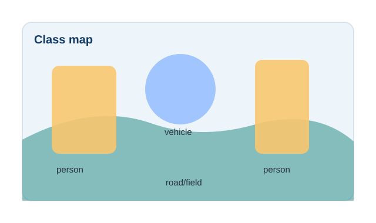

Definition
Semantic segmentation is pixel-wise classification. Given an input image I, the model predicts a class map Y with the same spatial resolution, or a lower-resolution map that is upsampled back to image size.

Pixel-wise Classification
A common network outputs a tensor of shape H x W x C, where C is the number of classes. Each pixel receives class scores, and the final prediction is usually the class with the highest score.
for each pixel p:
scores = model(image)[p]
predicted_class[p] = argmax(scores)Input-output Example
For a street scene, the input may contain road, sky, pedestrians, signs, and cars. The output is a map where all road pixels share one label, all sky pixels share another label, and all car pixels share the car label regardless of the number of cars.
Applications
Medical Imaging
Segment organs, tumors, lesions, cells, or tissue regions for measurement and clinical research.
Agriculture
Separate crop, weed, soil, leaf disease, and canopy regions for precision farming.
Autonomous Driving
Estimate road layout, lane regions, sidewalks, vegetation, and other scene classes.
Remote Sensing
Map buildings, water, forest, roads, and land-cover classes from aerial or satellite images.
Classical Models
FCN replaced fully connected classification layers with convolutional layers, enabling dense outputs. U-Net uses skip connections between encoder and decoder stages, which is especially useful when precise boundaries matter. DeepLab introduced atrous convolution and spatial pyramid pooling to capture multiscale context without aggressively reducing resolution.
Transformer-based Models
SegFormer combines hierarchical transformer encoders with a lightweight decoder. Mask2Former frames segmentation as mask classification and uses masked attention to support semantic, instance, and panoptic tasks in one architecture family.
Metrics
Pixel accuracy measures the fraction of correctly classified pixels. Mean IoU averages intersection-over-union across classes. Dice score emphasizes overlap and is popular in medical segmentation.
Tutorial Cards
U-Net from Scratch
Build an encoder-decoder model with skip connections and learn why feature alignment matters.
DeepLabV3 Explained
Understand atrous convolution, output stride, and atrous spatial pyramid pooling.
Semantic Segmentation Metrics
Practice pixel accuracy, mIoU, Dice, and confusion-matrix interpretation.
Medical and Agricultural Segmentation
Compare domain-specific challenges such as small objects, imbalance, and annotation noise.